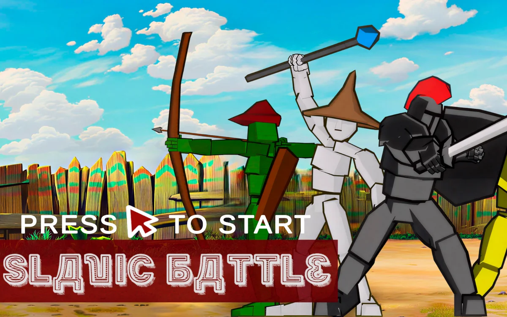
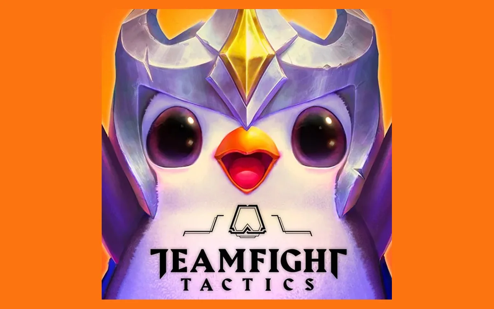

Class project · Team
Prototype: Infinite Runner
An arcade endless runner built in under a week: a penguin chasing the thief who stole his fish, with a gacha pull every 10 sardines that can help or hurt.
What it is
A prototype built in under a week with an arcade aesthetic: a penguin whose fish has been stolen chases the thief down a hill, dodging obstacles and collecting sardines that act as currency. Every 10 sardines trigger a gacha pull, granting a random effect, some helpful (temporary invulnerability), some harmful (inverted controls), that shift the odds of pulling the game's win condition on future spins. Crash into too many obstacles, though, and the run resets from the beginning.
What I did / experience gained
I modeled every environment element except the characters, designed the game's systems and how the gacha's effects would interact with the procedurally generated level, and assembled the levels and tiles the programming team provided for procedural obstacle generation.
Working under a sub-week deadline made this project a sharp lesson in reading the team's real strengths and limitations and scoping around them rather than around the ideal design. It also doubled as hands-on practice with Unity itself: my first real contact with Cinemachine, researching procedural generation approaches, and working with multiple simultaneous cameras in a single scene.
Playable build
Loading build
0%
Arcade runner · Built in < 1 week
Play in browser
Roughly 90 MB loads when you press start. Nothing downloads before that, and on a slow connection it will take a while. Built for desktop, and best played in fullscreen: the menu is laid out for a big screen.
The one-pager

Keep going
Before and after

PlayableBalancePrototype: Automatic Battle
A two-player automatic combat prototype built in under a week. Four units, three lanes, and balance that had to hold.…
← Previous
SystemsEconomyCustom TFT Set
A complete custom Teamfight Tactics set designed from scratch: a self-linking traits spreadsheet and a damage calculator built to …
Next →